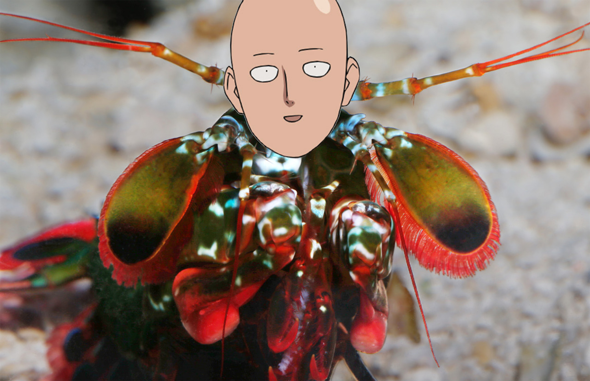

Informações Básicas
Stomatopoda é uma ordem de crustáceos marinhos carnívoros famosos tanto por sua visão espetacular quanto pelo potente golpe de garras que atinge tão forte quanto um tiro de calibre 22, que as espécies "esmagadoras" desferem para desmembrar suas presas.
Eles são conhecidas por muitos nomes, como mantis shrimp - "camarão louva-a-deus", do inglês - ou tamarutaca, e a mais famosa espécie como lagosta boxeadora, em terras tupiniquins, mas na verdade os stomatopodas não são nem lagostas, nem camarões, e certamente não são louva-a-deuses. Todos esses nomes fazem certo sentido, entretanto. Sua aparência lembra a de uma lagosta, ou a de um camarão, porém muito mais colorido. Seu exoesqueleto sempre possui múltiplas cores vibrantes.
As tamarutacas são divididas em duas categorias: as esmagadoras (smashers) e as perfuradoras (spearers), de acordo com o formato de suas garras dianteiras. As perfuradoras possuem garras que lembram lanças, daí o nome spearers, que utilizam para perfurar presas mais macias, como peixes. As esmagadoras são as que trazem a fama à ordem, com suas garras em formato mais arredondado, semelhante às das lagostas, e utilizam seus potentes golpes para atacar presas como lesmas, ostras e caramujos, esmagando-os e desmembrando-os.
Talvez a espécie mais famosa, como já dito, seja a chamada "lagosta-boxeadora", cujo nome científico é Odontodactylus scyllarus. Ela também é conhecida como peacock mantis shrimp ("camarão louva-a-deus pavão"), devido à sua já mencionada coloração vibrante. Essa espécie em específico é famosa devido a ser uma das mais comuns e também uma das maiores conhecidas de toda a ordem, o que lhe garante também o soco mais potente conhecido.
Seu soco acelera a mais de 100 mil m/s²
O soco da Odontodactylus scylarrus inicia com uma aceleração de mais de 10 mil vezes a aceleração gravitacional, cerca de 100 mil m/s², e atinge, em menos tempo do que 1/50 de um piscar de olhos, a velocidade de mais de 20 m/s, ou 80 km/h. Seu soco é tão rápido que, por um breve momento, a água ao redor se aquece a uma temperatura de cerca de 4800°C, uma temperatura próxima à da superfície do Sol. Isso evapora a água, gerando bolhas cheias de vapor quente, num processo conhecido como cavitação. Essas bolhas atingem sua presa logo após o impacto da garra em si, numa onda de choque capaz de atordoar e até matar, mesmo que o golpe inicial erre o alvo.
Eles enxergam muito mais cores do que nós conseguimos sequer compreender

Os olhos de grande parte dos animais possui estruturas chamadas cones, responsáveis por diferenciar comprimentos de ondas eletromagéticas - que nos permite enxergar as diferentes cores. A maior parte dos seres humanos possuem 3 tipos de cones, os que enxergam cores próximas do espectro Vermelho, próximas do espectro Verde e próximas do espectro Azul - e a combinação desses principais forma todas as cores que conhecemos.
Pessoas com daltonismo possuem deficiência em um ou mais tipos de cones, o que limita o espectro de cores visível para elas. Algumas raríssimas pessoas possuem 4 tipos de cones, o que garante a elas visão excepcional, principalmente em ambientes com pouca iluminação.
Outros animais possuem diferentes quantidades de tipos de cones. Os cachorros, por exemplo, possuem apenas dois. As borboletas possuem incríveis 5 tipos de cones... mas nada se compara às tamarutacas, que possuem até 16 tipos de cones, possuindo o sistema ocular mais complexo conhecido no mundo animal. É impossível para nós compreender até mesmo a quantidade de cores que essas criaturas enxergam devido à combinação de todos os tipos de ondas eletromagnéticas que podem ser captadas por esses cones.
Os stomatopodas são animais fascinantes, que passam a maior parte de suas vidas distantes de onde podemos enxergá-los - em buracos no fundo do mar.
Imaginemos: quantas outras espécies magníficas e extraordinárias nós desconhecemos?
Quantas estão em lugares que nós nunca pudemos explorar a fundo?
E quantas outras já existiram antes de nosso tempo?
Referências Bibliográficas
- Artigo na Wikipedia, com uma série de referências a teses de doutorado e artigos científicos;
- Esse maravilhoso comic do Oatmeal;
- Fact Animal;
- Guinness World Records;
- O vídeo Mantis Shrimp Packs a Punch | Predator in Paradise, da Nat Geo WILD;
- The Women With Super Human Vision, artigo da BBC.